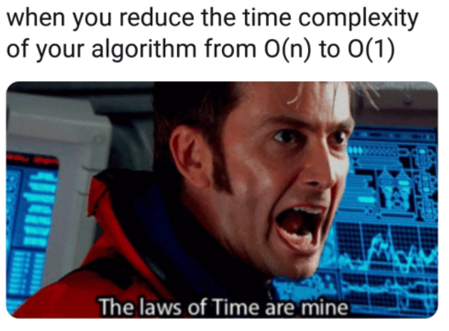
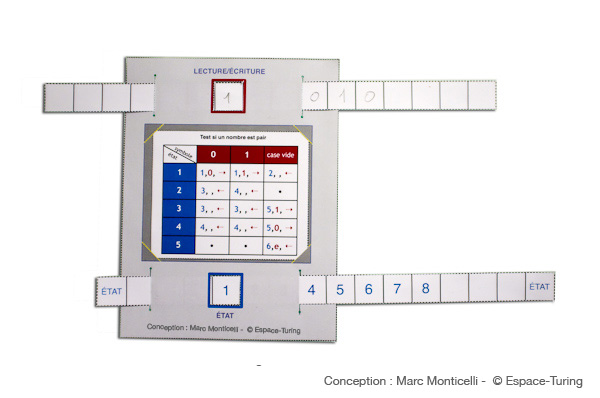
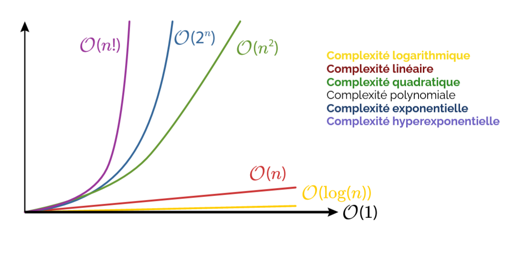

4.2 Complexité d'un algorithme⚓︎

Activité

Computer Paper - Do It YourselfDans un article qui fera date, « On Computable Numbers with an Application to the Entscheidungsproblem » publié en 1936, Alan Turing, jeune mathématicien anglais, jette les bases de ce qui deviendra la
Cette machine est composée d’un « ruban » supposé infini, chaque case contenant un symbole parmi un alphabet fini, d’une tête de lecture/écriture, d’un registre d’états, d’une liste d’instructions.
L’ordinateur - théorique - est né !
Turing définit le calcul sous la forme d’une liste finie d’instructions, itérables un nombre indéfini de fois. Il vient de poser les fondements de la science informatique. Il n’a que 24 ans !
Pour le centenaire de sa naissance, nous vous proposons de faire un voyage dans le temps, en construisant votre propre ordinateur en papier, à la manière d’Alan Turing il y a 76 ans.
Pour résumé
La machine de Turing, une révolution des mathématiques et de l'informatique - Passe-science
On retiendra ici, que le modèle de la machine de Turing, sert d'étalon pour mesurer la complexité d'un algorithme : C'est l'ordre de grandeur du nombre d'opérations élémentaires (lire, déplacer la tête de lecture) qu'effectuerait une machine de Turing pour effectuer l'algorithme.
Pour aller plus loin
- Un super Podcast Enigma, la guerre du code
La complexité d'un algorithme est une notion qui nous éclaire sur la manière dont cet algorithme va être sensible à la taille des données passées en paramètre. Il y a plusieurs types de complexités étudiables (nombre d'opérations, temps nécessaire, espace-mémoire nécessaire...).
En NSI, nous nous contenterons d'estimer (lorsque cela est possible) le nombre d'opérations effectuées par l'algorithme, et nous mesurerons les temps d'exécution de ces algortihmes.
Exemple
def fonction1(n) :
a=0
for i in range(n):
a=a+1
return a
def fonction2(n):
a=0
for i in range(n):
a=a+1
for i in range(n):
a=a+1
return a
def fonction3(n):
a=0
for i in range(n):
for j in range(n)
a=a+1
return a
Nous observerons surtout comment évolue ce temps d'exécution en fonction de la taille des données passées en paramètre (la taille d'une liste, par exemple). Cela nous permettra dans ce cours de classer nos algorithmes en deux catégories : les algorithmes de complexité linéaire et ceux de complexité quadratique.

1. Complexité linéaire⚓︎
1.1 Exemple⚓︎
Exemple d'algorithme
Votre travail est de mettre des bulletins dans des enveloppes pour une campagne de communication.
L'algorithme en jeu ici est "je prends un bulletin, je le plie, je le mets dans l'enveloppe, je ferme l'enveloppe".
On suppose que vous travaillez à un rythme constant.
Le premier jour, on vous donne \(n\) enveloppes à remplir. Vous mettez un temps \(T\) pour les traiter.
Le deuxième jour, suite à l'absence d'un employé, on vous donne le double d'enveloppes, soit \(2n\) enveloppes. Combien de temps allez vous mettre pour les traiter ?
Réponse
Cela prendra deux fois plus de temps, donc \(2T\).
1.2 Vocabulaire⚓︎
On dit que l'algorithme ci-dessus est de complexité linéaire.
Complexité linéaire 
Les expressions suivantes sont équivalentes :
- L'algorithme est de complexité linéaire.
- L'algorithme est d'ordre n.
- L'algorithme est en \(O(n)\)
(«grand O de n»)
Toutes ces formulations renvoient à la même idée : le nombre d'opérations nécessaires (et donc le temps nécessaire à la terminaison de l'algorithme) évolue proportionnellement avec le nombre de données à traiter.
1.3 Formulation mathématique⚓︎
Si un employé A met 3 secondes par enveloppe, on aura \(T_A=3n\).
Si un employé B met 20 secondes par enveloppe, on aura \(T_B=20n\).
On retrouve la formulation mathématique d'une fonction linéaire \(f\).
Ici, la fonction \(f_A\) serait \(f_A(x)=3x\), la fonction \(f_B\) serait \(f_B(x)=20x\)
Dans les deux cas l'algorithme a la même complexité (linéaire donc). Ce qui compte est le fait que pour chacun des employés, avoir deux fois plus d'enveloppes prendrait deux fois plus de temps.
1.4 Vérification expérimentale⚓︎
On considère la fonction ci-dessous :
def fabrique(n):
liste = []
for _ in range(n):
liste.append("ok")
return liste
Le code ci-dessous va mesurer le temps d'exécution de cette fonction avec deux paramètres différents : la valeur 400 puis la valeur 800.
import time
t0 = time.time()
lstA = fabrique(400)
print("temps pour une liste de taille 400 :", time.time() - t0)
t0 = time.time()
lstB = fabrique(800)
print("temps pour une liste de taille 800 :", time.time() - t0)
Résultats de l'exécution :
temps pour une liste de taille 400 : 2.384185791015625e-05
temps pour une liste de taille 800 : 4.2438507080078125e-05
Interprétation :
Doubler la taille du paramètre d'entrée a eu pour effet de doubler (quasiment) le temps d'exécution. Cela semble indiquer que la complexité de cette fonction est linéaire.
En observant l'algorithme, nous pouvons confirmer cette supposition : le nombre d'opérations de la boucle for est égal au paramètre n, et est donc directement proportionnel à la valeur de ce paramètre.
2. Complexité quadratique⚓︎
2.1 Exemple⚓︎
Exemple d'algorithme
Vous avez l'habitude de tondre la pelouse de votre terrain carré, de côté \(n\). Cela vous prend un certain temps \(T\).
Votre voisin vous propose de venir chez lui tondre son terrain carré de côté \(2n\).
Combien de temps cela va-t-il vous prendre pour tondre le terrain de votre voisin ?
Réponse
Cela vous prendra 4 fois plus de temps.
2.2 Vocabulaire⚓︎
On dit que l'algorithme ci-dessus est de complexité quadratique.
Complexité quadratique
Les expressions suivantes sont équivalentes :
- L'algorithme est de complexité quadratique.
- L'algorithme est d'ordre n au carré.
- L'algorithme est en \(O(n^2)\)
(«grand O de n carré»)
Toutes ces formulations renvoient à la même idée : le nombre d'opérations nécessaires (et donc le temps nécessaire à la terminaison de l'algorithme) évolue proportionnellement avec le carré du nombre de données à traiter.
Les algorithmes quadratiques sont moins «intéressants» que les algorithmes linéaires, car ils vont consommer beaucoup plus de ressources. Lors de l'élaboration d'un algorithme, on va toujours essayer de trouver l'algorithme ayant la complexité la plus faible possible.
2.3 Vérification expérimentale⚓︎
On considère la fonction ci-dessous :
def tables(n):
for a in range(n):
for b in range(n):
c = a * b
Le code ci-dessous va mesurer le temps d'exécution de cette fonction avec deux paramètres différents : la valeur 100 puis la valeur 200.
import time
t0 = time.time()
tables(100)
print("temps pour n = 100 :", time.time() - t0)
t0 = time.time()
tables(200)
print("temps pour n = 200 : ", time.time() - t0)
Résultats de l'exécution :
temps pour n = 100 : 0.0003533363342285156
temps pour n = 200 : 0.0014693737030029297
Interprétation :
Doubler la taille du paramètre d'entrée a eu pour effet de quadrupler le temps d'exécution. Cela semble indiquer que la complexité de cette fonction est quadratique, car \(2^2=4\).
En observant l'algorithme, nous pouvons confirmer cette supposition : le nombre d'opérations des deux boucles for est égal à n^2.
3. Complexité constante⚓︎
Il peut arriver (mais c'est rare) que la complexité d'un algorithme soit indépendante de la taille des données à traiter.
Dans ce cas, c'est souvent une très bonne nouvelle.
Exemple :
def est_pair(nombre):
return nombre % 2 == 0
Complexité constante
Les expressions suivantes sont équivalentes :
- L'algorithme est de complexité constante.
- L'algorithme est d'ordre 1.
- L'algorithme est en \(O(1)\) («de l'ordre de 1»)*
Toutes ces formulations renvoient à la même idée : le nombre d'opérations nécessaires (et donc le temps nécessaire à la terminaison de l'algorithme) est constant quelle que soit la taille des données d'entrée de l'algorithme.
3. Les différentes complexités⚓︎
On peut classer les algorithmes selon leur complexité.
- Complexité constante : \(O(1)\)
- Complexité logarithmique : \(O(log_{2}(n))\)
- Complexité linéaire : \(O(n)\)
- Complexité quasi-linéaire : \(O(nlog_{2}(n))\)
- Complexité polynomiale : \(O(n^k)\)
- Complexité exponentielle : \(O(2^n)\)

4. Preuve d’un algorithme⚓︎
Il est important de pouvoir montrer qu’un programme termine, afin de savoir si son exécution se fera sans problème.
Parmi les instructions ci-dessous, quelles sont celles qui ne peuvent pas engendrer d’exécution infinie d’un algorithme ? Quelle est/sont la/les seule(s) instruction(s) problématique(s) ?
- Affectation
- Instruction conditionnelle (if … Then …else …)
- Boucle Pour (for)
- Boucle Tant que (While)
On suppose maintenant que l’on est capable d’écrire un algorithme, appelé Terminator, dont la fonction est de répondre vrai si un programme termine et faux si un programme ne termine pas. Ainsi, l’instruction Terminator(P) renvoie vrai si le programme P termine toujours et faux si P est capable de boucler.
Algorithme : SarahConnor
Tant que _terminator_(sarahConnor) faire
rien
fin tant que
À quelle condition le programme SarahConnor termine-t-il ?
On comprend donc que le problème de la terminaison des algorithmes n’est pas si simple. On peut énoncer le théorème suivant :
Problème de l'arrêt
Il n'existe pas de programme permettant de dire si un algorithme termine toujours ou non.
On dit en théorie de l’informatique que le problème de l’arrêt est indécidable. En fait, le théorème de Rice dit même que toute propriété non triviale sur les programmes est indécidable. Bien que ce soit vrai dans le cas général, on peut cependant s’intéresser à des cas particuliers et utiliser des propriétés mathématiques pour démontrer que des algorithmes simples terminent.
Problème de l'arrêt
petite vidéo : (Calculabilité : le problème de l'arrêt )[https://www.youtube.com/watch?v=13O1qhX4Bqo]{ target="blank"}
4.1 Définition⚓︎
Définition de la preuve
On appelle preuve d’un algorithme, la propriété qui assure à ce dernier :
- de se terminer. On appelle cela la terminaison de l’algorithme
- de réaliser ce qu’’on attend de lui. On appelle cela la correction de l’algorithme.
4.2 Comment ≪prouver≫ ?⚓︎
4.2.1 Terminaison⚓︎
Il est fréquent dans l’établissement d’un algorithme, qu’un programmeur ait recours a une structure de boucle. Lorsque cette dernière est conditionnelle (while), et que l’algorithme exécute une première fois les instructions contenues dans la boucle, il est important de s’assurer que l’algorithme sortira de la boucle et se terminera. Cette propriété de l’algorithme s’appelle la terminaison
Ainsi : Le groupe d’instructions de la boucle doit permettre une modification de la condition de boucle.
Définition
On appelle convergent (ou variant de boucle) une quantité qui prend ses valeurs dans un ensemble bien fondé et qui diminue strictement à chaque passage dans une boucle.
Remarque : Un ensemble bien-fondé est un ensemble totalement ordonné dans lequel il n’existe pas de suite infinie strictement décroissante.
Propriété
L’existence d’un convergent pour une boucle garantit que l’algorithme finit par en sortir.
Propriété
On assure la terminaison d’un algorithme lorsque toutes les structures de boucles conditionnelles de celui-ci ≪terminent≫.
Pour la boucle For en Python, on utilise la fonction range qui est strictement décroissante et positive. La boucle For se termine donc toujours.
En effet, on peut toujours construire un variant simple.
Si la boucle est donnée par la structure : Pour i allant de a à b, un variant simple est b − i
4.2.2 Correction⚓︎
En outre, la seconde préoccupation du programmeur sera d’assurer que son algorithme réalise bien le travail demande. Cette propriété de l’algorithme s’appelle la correction. Elle est généralement plus délicate à établir.
Propriété
On assure la correction d’un algorithme avec boucle en dégageant une propriété vérifiée avant l’entrée dans la boucle et qui le restera durant chaque itération i de boucle ; soit \(P_i\) cette propriété au rang i. Cette propriété doit permettre de renvoyer le résultat attendu au dernier rang de boucle. On l’appelle l’invariant de boucle.
Définition
L’invariant de boucle est une formule logique qui :
- est vérifiée à l’initialisation de la boucle
- reste vraie à chaque itération de la boucle
4.3 Quelques exemples⚓︎
4.3.1 Factorielle⚓︎
On considère le script python suivant :
Abstract
On note n! le nombre entier défini par n! = n x (n - 1) x (n - 2) x … x 3 x 2 x 1. (on dira « n factorielle »)
- Calculer
4!, puis7! - Ecrire la fonction python
factorielle(n)qui prend en paramètre un entier et qui renvoie un entier correspondant au factoriel - Puis déterminer la correction de l'algorithme
factorielle(n)
def factorielle(n) :
'''
fonction impérative qui calcule la factorielle de n
@param n : int strictement positif
@return : int
'''
resultat = 1
i = 1
while i <= n:
resultat *= i
i += 1
return resultat
assert factorielle(0) == 1
assert factorielle(1) == 1
assert factorielle(5) == 120
Preuve de terminaison
1.Initialisation :La variable \(i\) est initialisée à \(1\) , et \(n\) est supposé un entier positif ou nul (\(n \geq 0\)).
2.Condition de terminaison :
- La boucle s'exécute tant que \(i \leq n\). À chaque itération, \(i\) est incrémenté de 1.
- Puisque \(i\) commence à \(1\) et augmente à chaque étape, il finira par dépasser \(n\), ce qui rendra la condition \(i \leq n\) fausse.
3.Incrémentation garantie :
L'instruction i += 1 garantit que \(i\) progresse à chaque étape vers \(n+1\), assurant ainsi la terminaison.
Conclusion : L'algorithme finit toujours après un nombre fini d'itérations.
Preuve de correction
La correction repose sur la validité d’un invariant de boucle : **À chaque itération, la variable resultat contient le produit des entiers de \(1\) à \(i-1\).
-
Initialisation :
Avant la première itération (\(i = 1\)),resultat = 1. Cela correspond à la factorielle d’un ensemble vide (\(0! = 1\)), donc l'invariant est vrai. -
Maintien :
-
Supposons que l'invariant est vrai au début d'une itération, c'est-à-dire que
resultatcontient \(1 \times 2 \times \dots \times (i-1)\). -
Pendant cette itération,
resultatest mis à jour avec \(resultat \times i\). À la fin de cette itération,resultatcontient \(1 \times 2 \times \dots \times i\), donc l'invariant est maintenu. -
Terminaison :
La boucle se termine lorsque \(i > n\). À ce moment,resultatcontient \(1 \times 2 \times \dots \times n\), ce qui est exactement \(n!\).
Conclusion : L'algorithme retourne correctement \(n!\).
4.3.2 Puissance de 2⚓︎
Exercice : Puissance de 2
- Ecrire une fonction puissance2 prenant en paramètre un entier positif et retournant la puissance de 2 de celui-ci.
exemple : \(2^3=8\) - Donner la preuve de cet algorithme
On considère le code python calculant la puissance \(n^{ieme}\) de 2 :
def puissance_de_deux(n):
resultat = 1
i = 0
while i < n:
resultat *= 2
i += 1
return resultat
Preuve de terminaison
- Initialisation :
-
La variable \(i\) est initialisée à \(0\), et \(n\) est supposé être un entier positif ou nul (\(n \geq 0\)).
-
Condition de terminaison :
- La boucle s'exécute tant que \(i < n\). À chaque itération, \(i\) est incrémenté de \(1\) et donc \(n-i\) tend vers \(0\).
-
Puisque \(i\) commence à \(0\) et augmente de \(1\) à chaque étape, \(n-i\) finit nécessairement par atteindre \(0\).
-
Incrémentation garantie :
- L'instruction
i += 1garantit que $ i $ progresse à chaque étape vers $ n $.
Conclusion : L'algorithme termine toujours après \(n\) itérations.
Preuve de correction
La correction repose sur l'invariant de boucle suivant : **À chaque itération, la variable resultat contient \(2^i\), où \(i\) est la valeur courante du compteur.
-
Initialisation :Avant la première itération ($ i = 0 $),
resultat = 1. Cela correspond à \(2^0 = 1\), donc l'invariant est vrai. -
Maintien :
-
Supposons que l'invariant est vrai au début d'une itération, c'est-à-dire que
resultatcontient \(2^i\). -
Pendant cette itération,
resultatest mis à jour avec \(resultat \times 2\), ce qui donne \(2^{i+1}\). En même temps, \(i\) est incrémenté à \(i + 1\), donc l'invariant reste vrai. -
Terminaison : La boucle se termine lorsque \(i = n\). À ce moment, l'invariant garantit que
resultatcontient \(2^i\), avec \(i = n\). Ainsi,resultatcontient \(2^n\).
Conclusion : L'algorithme retourne correctement \(2^n\).
A retenir
Voici une méthode pour prouver la terminaison et la correction d’un algorithme ayant une boucle while :
- Définir clairement les préconditions – état des variables initial (avant la boucle)
- Déterminer la variant de boucle et prouver la terminaison de la boucle
- Définir un invariant de boucle
- Prouver que l’invariant est vrai au début de la boucle et à chaque itération
- Montrer qu’en sortie de boucle l’invariant est vrai et que combiné à la condition de sortie de boucle il permet de prouver que l’algorithme est correct